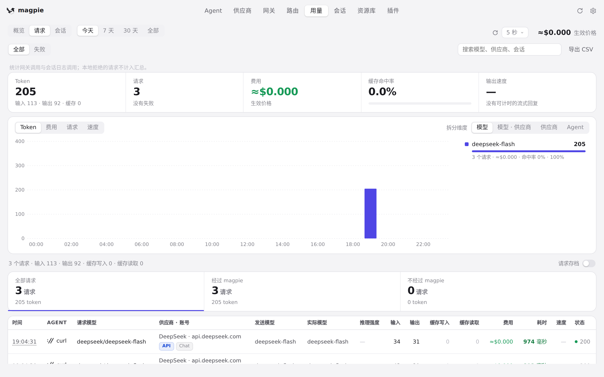
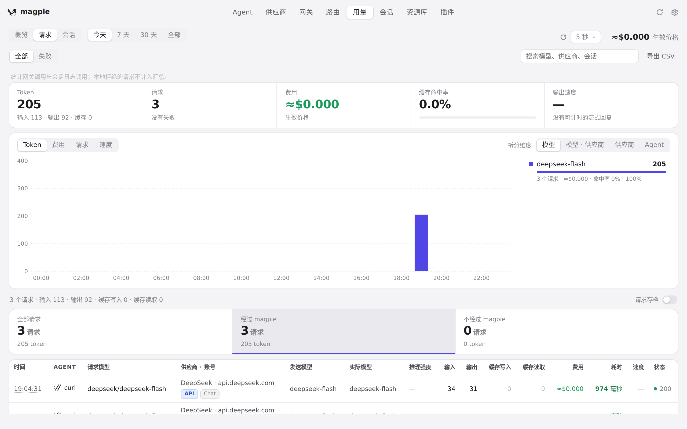
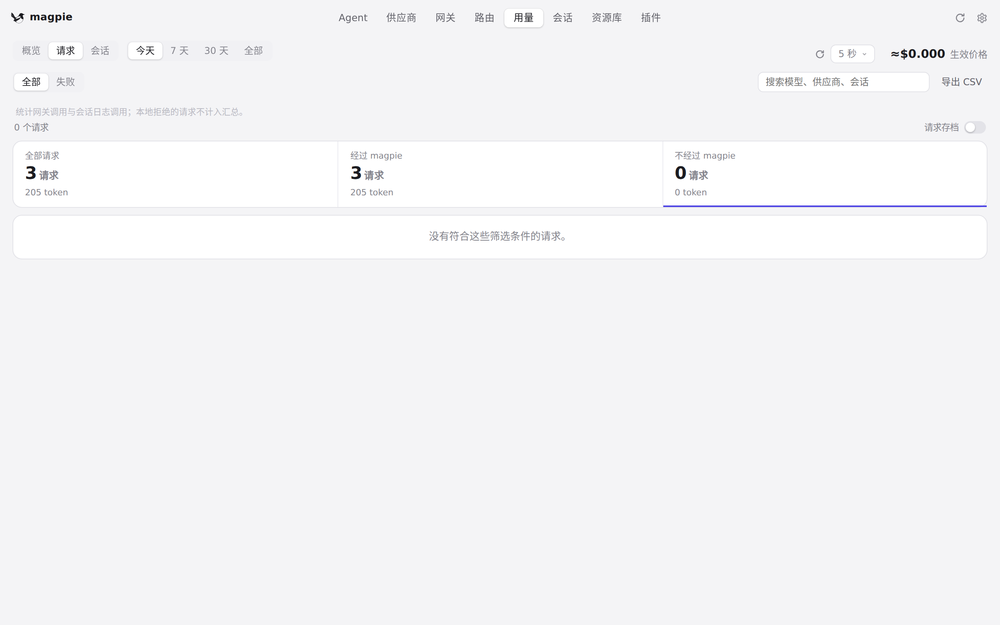
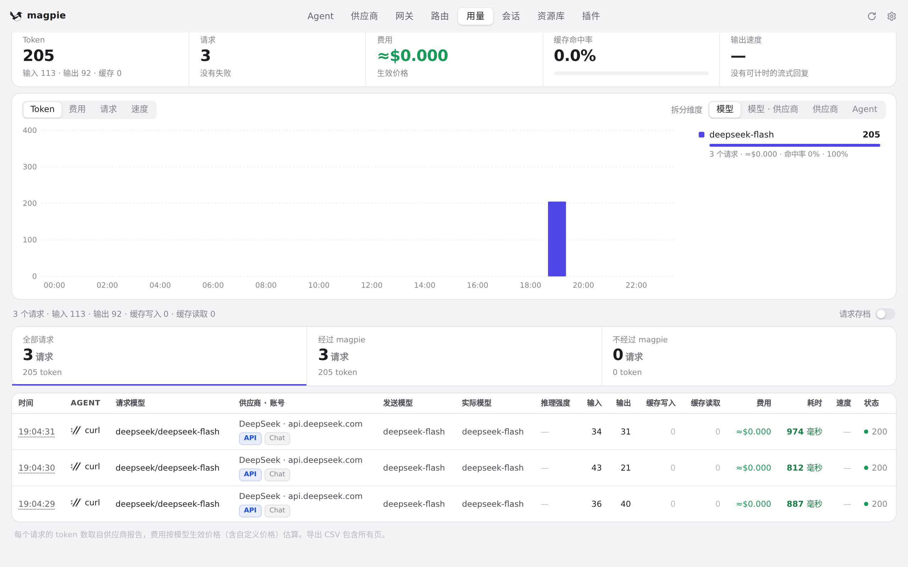
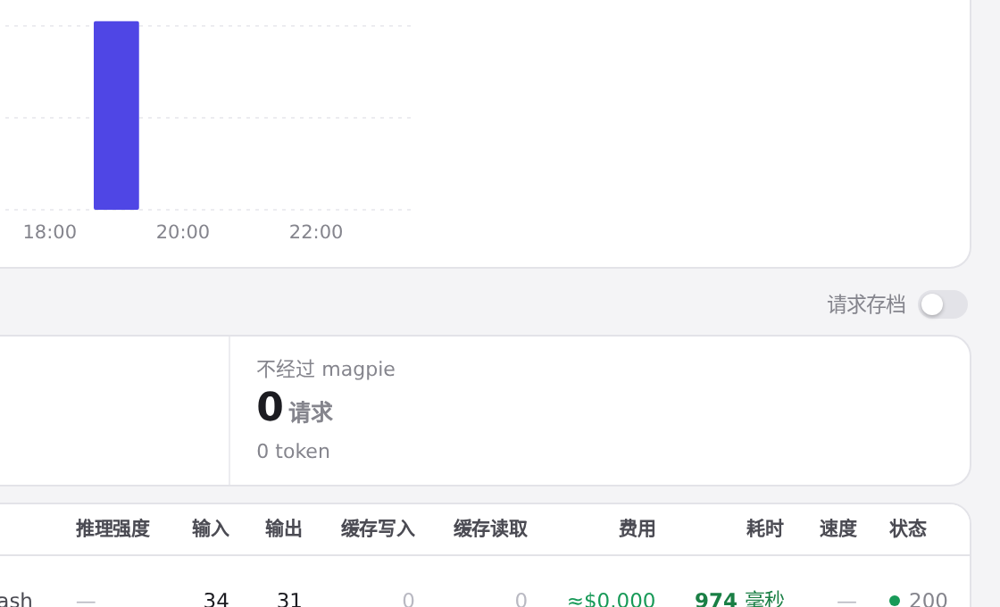
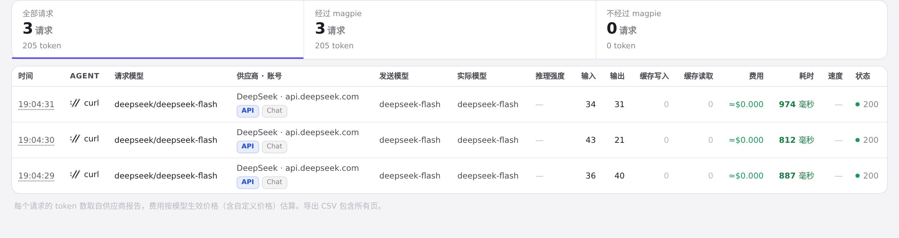

#948 界面预览
commit 47d86aa · 回到 PR · 「用量 › 请求」页顶部新增一行三个可点击的来源格子（全部请求 / 经过 magpie / 不经过 magpie），点选即按来源筛选请求列表；请求表的「供应商 · 账号」列会显示会话文件里记录的供应商标识并配新的徽章提示；同时修好了打开「用量」时请求存档开关不显示的问题，速度图的柱子改用 --pill 绘制、并为高出柱子的色块加了引导线。
红线是鼠标走过的轨迹，红色圆环是一次点击；底部文字是这一步在做什么。空格暂停，← → 逐段查看。

请求页的来源筛选 · 「用量 › 请求」打开后的页面：页顶的格子与请求表格

请求页的来源筛选 · 点击「经过 magpie」后的请求列表

请求页的来源筛选 · 点击「不经过 magpie」后的请求列表

请求页的来源筛选 · 点击「全部请求」后的请求列表

请求页顶部的存档开关与表格 · 总数行右侧的开关，打开「用量」直接进到这一页时的样子

请求页顶部的存档开关与表格 · 「请求」表格的各列